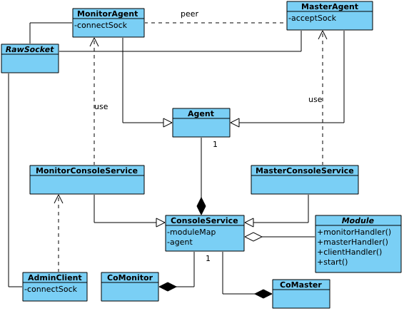
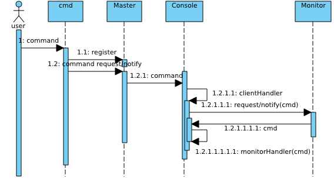

As we know, pomelo supports adding or stoping a server to scale up/down dynamically, so we would ask when adding an application server, how the application server that has been started to know the new additional server; When stopping a server, how the other running servers to know it and make subsequent RPC invocation or messages are not routed to the server has been stopped.
Also, if you want to know the running status of the server cluster, how to get it? The answer is the administration framework pomelo provides. The administration framework of pomelo is extensible, users can customize their own admin-module and plug it into administration framework to meet their own demands. Here is some introduction to it.
Server Administration Framework of Pomelo
There are three roles in pomelo administration framework, namely, master, monitor and client. Master can be treated to correspond to master component loaded by master server. Monitor can be treated to correspond to monitor component loaded by all servers, and client can be treated as a third-party administration tool, Pomelo command-line tool, pomelo-cli and admin-console-web provided by pomelo all play as client role.
-
Typically, administration patterns can be roughly divided into two categories :
Master requests to monitor for certain monitoring information, monitor reports its monitoring information to master as a response, master caches the monitoring informations it has got from monitor. The third-party client connects and registers to master (username and password may be required), and then requests the server cluster's monitoring information to master, master return its cached monitoring information back to client.
Client connectes and registers to master, and then send a command, for example, shut down the server cluster, to master. Master receives the command, and broadcasts it to all the monitors that registed to master. So long as monitor receives the shutdown command, it will shut itself down.
The figure presented below shows class diagram of the administration framework, which is part of the pomelo framework presented before:

In the class diagram above, Master component, Monitor component, AdminClient are corresponding to master, monitor and client role we mentioned before. We will use these term indiscriminately in the following.
For master, MasterConsoleService will manage all registered admin-modules, generates a map with ModuleId as its key for admin-modules. MasterAgent listens on configured port and accepts connections and registeration from monitor and client, it also accepts the request/notify from monitor and client and send request/notify to monitor. Note, master will not send request/notify to client initialtively, it will only respond to client for request handling.
For monitor, MonitorConsoleService will manage all registered admin-modules and maintain map of admin-modules. All servers can learn the listening host and port of master server through the configuration file of master server. MonitorAgent connects and registers to master and maintains connection, then communicates with master via this connection.
For client, it connects and registers to master, it may be required to provide an username and password when registering. AdminClient maintains the connection to master, and then it sends requst/notify to master to manage the server cluster.
All communication-related classes maintain their own connection socket. For Master, it has to maintain the connection socket and listening socket. The underlying transport for administration framework is socket.io.
A Module (admin-module) defines four callback: monitorHandler, masterHandler, clientHandler and start and all of these callbacks are optional. The callback's function signature is
XXXHandler (agent, msg, cb), the first parameter indicates caller's Agent, it can be MonitorAgent/MasterAgent for monitor/master side, the second parameter is body of request/notify, and the third is a callback which is used to respond to requester if it is a request, otherwise, the third parameter is ignored.
Here we use a sequence-like diagram to illustrate control flow of administration framework :

In fact, we make more than one control flow for different scenarios together in this ONE diagram in order to simplification. Readers can distinguish one scenarios from others in the diagram.
Master Component Startup
Master server always starts firstly. At the last of "start" called of master component, it will delegate the task to start all the application servers to Starter, and the call to Starter.start will start all the application servers. There are several steps to be completed in starting master:
Load registered admin-module(Module) to MasterConsoleService.
After finishing loading Modules, MasterAgent will listen on configured port. At this time, master would be able to accept request and notify from client and monitor.
After starting listening, MasterConsoleService will enable all Modules registered to itself. This operation mainly schedules the periodic monitoring operation if Module has been configured that master should pull the monitoring data periodically, in other word, the Module's option type is set to 'pull'.
Finally, if Module has callback "start", it will be called here. In general, it does some initialization in the callback "start".
After these steps above, master started.
Monitor Component Startup
Since application servers are launched later than master, so monitor is also started later than master. The steps of monitor starting is similar to master component, the only difference is that, monitor will initiates a connection to the master, but not listens on certain port. Monitor also does several steps, load registered Modules, schedule periodic monitoring operation if there are Modules is configured to periodically push data to master, that means its option "type" is set to 'push'. Finally, if there are Modules which defines the callback "start" , then call it. It may be required to provide a token when monitor registering to master for security.
Client Registration
Client need to connect and register to master, so it would start successfully only if master has started. For sake of security, client should provide username and password for authentication, all the authentication infomation is specified in file config/adminUser.json, there are also configuration file example in the demo. If authenticated successfully, it registers successfully.
Periodical Triggered
Module may have been configured options "type" and "interval", they are used to configured for monitor to report monitoring information to master periodically. "Type" indicates reporting mode, "pull" means master request to monitor for monitoring information periodically, while "push" means monitor would push monitoring information periodically. And "interval" indicates period. If a Module has been configured "type" and "interval", as we know before, it would be scheduled while its enabling. If the mode is configured to 'pull', then, masterHandler will be callbacked every interval seconds without any arguments passed.
Request/Notify
When a monitor request/notify to master, the request would hold ModuleId and arguments the callback would use. And then, in master, masterHandler will be callbacked with those arguments of the Module indicated by ModuleId. Therefore, master can distinguish whether the callback to masterHandler is a request/notify accepted or periodical triggered by the passed arguments since no arguments is passed if period triggered.
Monitor is similar to master, when a Module is configured option type is to 'push', its monitorHandler will be callbacked periodically to report monitoring information to master. When master request/notify to monitor with ModuleId and arguments, monitorHandler would also be callbacked too. Being same with master, monitor can distinguish whether the callback to monitorHandler is a periodical triggered or a request/notify accepted by the passed arguments.
Of course, the request/notify may holds no arguments same as periodical triggered, this situation can only be handled by the business logic. In general, in order to facilitate to distingush, do not send request/notify without arguments.
- After registering to master, client can send request/nofity to master. The request/notify will hold ModuleId and the callback arguments. When master accepts a request/notify from client, clientHandler of Module identified by ModuleId hold in request/notify will be callbacked with arguments hold in request/notify too. Note: master will not send request/notify to client, only responds to client for client's requests.
These scenarios above basically describe the control flow of the server administration framework that pomelo provides, the following will analyze two builtin Modules which are important to pomelo.
Watchdog
We know that for the static applciation server configuration information, it can be obtained directly from the configuration file, but because pomelo supports adding and stopping servers at runtime dynamically, it requires a mechanism to spread the information when server cluster changes such as adding a server, stoping a server.
Pomelo uses the built-in Module watchdog to do this. The following is a sequence-like diagram to illustrate how watchdog to work via some typical scenarios:

Bind Events
When watchdog is loaded by master component at master server, in addition to listen on certain port, it will re-emit the socket events that can be captured by MasterAgent, and then the re-emited socket events will be caught and handled by MasterConsoleService, these socket events include:
Register, if there is a MonitorAgent initiates a connection and registration to MasterAgent, it will emit this event. MasterConsoleService will handle it by broardcasting the adding server to all the started servers.
Disconnect, if there is a MonitorAgent disconnects to MasterAgent, it will emit this event. Also, MasterConsoleService will broadcast the leaving server information to all the startd servers to handle this event.
reconnect, if there is a MonitorAgent reconnects to MasterAgent, that means the server connects to master again after it disconnects from master due to some reason. It will emit this event. MasterConsoleService also broadcast the reconnecting server information to all the started servers to handle this event as well.
Adding Server
In scenario 4, when watchdog being loaded by monitor while a new server launching, its start callback will be called during initialization phase. In its start callback, monitor will initiate a subscription request for the information about server cluster to master, master will handle it by calling its masterHandler , and in which it will respond the server cluster information to the new added server and add this new added server to its listener list for it can send the change of the server cluster to it later.
In scenario 3, it shows inter-behavior of servers when adding a new server to server cluster. If a monitor initiates a registration request to master, it will trigger a register event and master will handle it by broadcasting the new adding server's information MasterAgent to all servers in its listener list that has subscribed for change information before. After accepting notifies from master, monitorHandler will be callbacked by all servers, in which app.addServers will be called to add the new adding server to their server map.
Stopping Server
In scenario 5, it shows behavior when there is an application server disconnects from master. It will emit disconnect event for MonitorAgent, in event handling for this event, MasterConsoleService will broadcast this disconnected server's information to all servers in master's listener list that has subscribed for change information before. Being similar to add server, After accepting notify from master, monitorHandler will be callbacked by all servers, in which app.addServers will called to remove the stopping server from their server map.
Reconnecting Server
In scenario 6, it shows behavior when there is an application server disconnect and reconnect to master. It is similar to adding server and stopping server, So analysis about it is ommited here.
Watchdog is a core Module of pomelo, used to complete exchange of the server status information among server cluster. Therefore, this Module involves only master and monitor, no client. so callback clientHandler definition is omitted. The administration event is emitted by the underlying socket connection, rather than periodically task, so it is no need to configure its option type and interval.
Console
Here is simple analysis about Module console, it is used to support pomelo command line tool:

The figure above shows a typical pattern for a user to manage the server cluster by a client using command. Here, we use pomelo list as an example to illustrate it:
User executes
pomleo list [options], at this time, the command-line tool creates an AdminClient, and then send a registration request to master. Options followingpomelo listhold location of master, listened port, username/password that is used for authentication and permission granted. Please refer to pomelo command line tool document for morre detail.After AdminClient registers to the Master successfully, it will send a request to master, whose arguments specify what operation to do, on which Module specified by ModuleId. In this example, ModuleId is
console, and the operation islist.After accepting the request from client, the clientHandler of console Module will be callbacked in master, it will check which operation should be done, and then broadcast this
listcommand to all the servers including itself.After accepting the command from master, monitorHandler of console Module will be callbacked in monitor, it will report its own status to master, including pid, heapused and so on.
Master will wait to collect all the monitors' reports. After completely collecting all the monitors' reports, it will respond it to AdminClient, that means the command-line tool will receive all the servers' status from master, and then the information is displayed.
In general, most administration command execution by client is similar to be shown above. If you configure a periodical monitoring task for Module by configuring its option type and interval, then master can get all the latest monitoring information periodically. So master can caches the monitoring information, it can directly respond its cache to client without needing to send requests to poll all servers' monitoring information while client send a request.
In Module console, since there is no request/notify sended from monitor to master, so console's masterHandler callback is omitted, so is the start callback.
Note: For the command-line tool, command add is obsolete now. When you need to add server, it is recommended to use pomelo-cli, which is a powerful interactive command-line tool, pomelo-cli use more Modules that implemented in pomelo-admin, including watchServer, Script and so on. In pomelo application, using app.enable ('systemMonitor') makes application register these Modules implemented in pomelo-admin. Otherwise, only console and watchdog will be registered by default. There is also a web-based monitoring tool [pomelo-admin-web], which provides server administration through web pages, of course it plays as a client role too.
Access Control
When client connected and register to master, it is required to make an authentication because client may be a vicious. Users that can execute command for server cluster is configured in file adminUser.json, where divides users into several levels. For more about access control, you can refer to pomelo-cli related documents.
Summary
This section introduces server administration framework of pomelo in detail and analyze the two core Module: watchdog and console. Combined with the previous tutorial examples on Module, users can easily complete their own customized Module to meet their special demands.